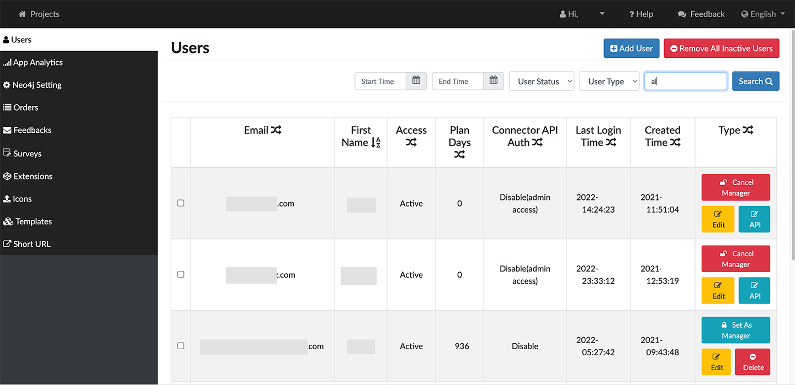
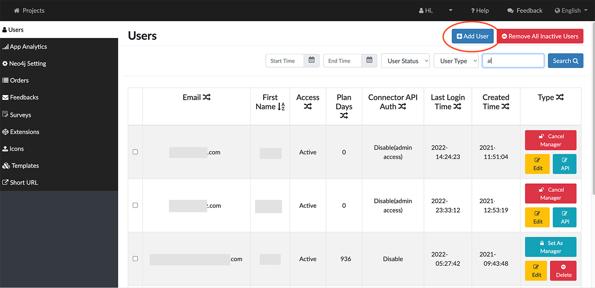
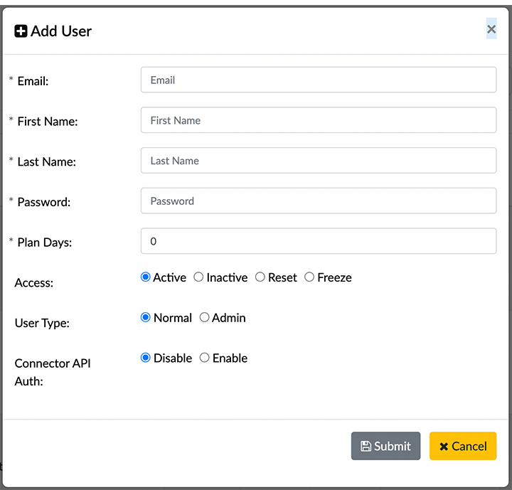
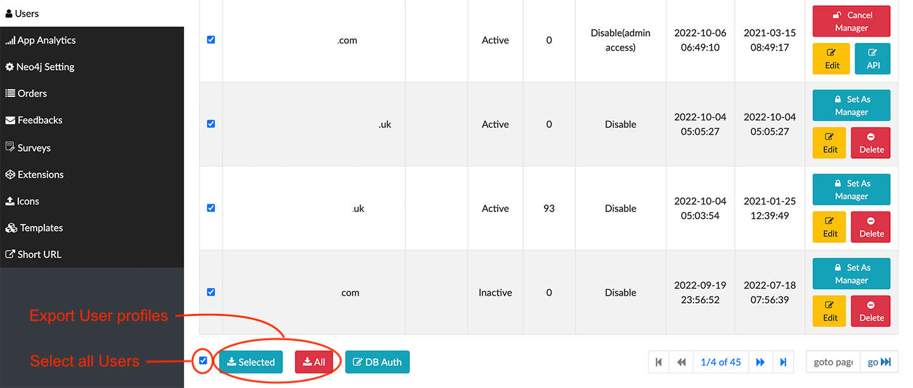
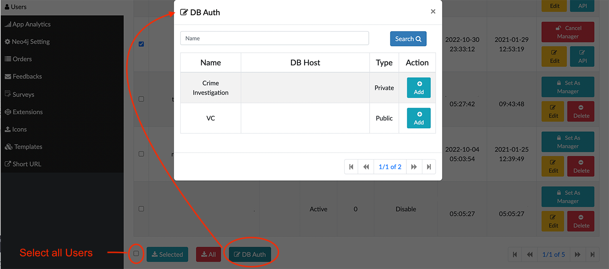

Managing Users The Users panel displays the list of current users and lets you review and manage their access to GraphXR and to the connected databases.  You can: Add a user. Remove All Inactive Users Edit a user profile to update user email, name, access, status, and type. Search for one or more users: Enter all or part of a user email. Select a time period during which the users were active. Select User Status or User Type from the dropdown menus. Export information for one or more users as a .CSV file. Modify the DB authorization for selected users. Add a User When an email server has been configured, each user of GraphXR must have a user account. A user who does not already have an account is prompted for a user name and password when logging in to GraphXR. If no email server is configured, users only need a url to access GraphXR. This can provide shared use or a read-only account. To add a user: Log in to your Admin account, and go to https://localhost:8080/admin The Users tab opens with a list of all users currently registered in the system.  Click the +Add User button at the top right, and enter the following information:  Email: The email used to sign in to the account. First Name and Last Name: The user’s first and last name. Password: A password you or the user selects. Upon signing in to GraphXR, a user can reset the password. Plan Days: Indicates the number of days remaining on the user’s subscription plan. Set Access to Active, Inactive, Reset, or Freeze. Set the UserType to Normal or Admin. When an account is set as Admin, Set as Manager appears for that user in the Users list. Clicking this label displays the Cancel Manager tab and changes the user back to Normal. More than one user can be given Admin privileges. Set the Connector API Auth to Disable or Enable. This lets you specifically grant access to the third party Connector applications in a GraphXR Enterprise installation. Click Submit to create the user profile, or Cancel. Clicking the X to close the window also cancels any changes. A message at the top of the dialog indicates that the user was successfully added. You can keep adding more users until you Cancel or close the dialog manually. Update a User To update a user: In the Users list, click the Edit Button for the user. The Edit User pop-up shows the full user profile. Enter new information for the user, and change the Access, or the User Type. Click Submit to create the user profile, or Click Cancel. Clicking the X to close the window also cancels any changes. Search for Users In the search fields at the top of the page, you can search for registered users by Email, or by using the date selectors to set a Start Time and End Time. To search for a user: Enter your search criteria. Enter or select the user’s Email. a Start Time and End Time. the User Status or User Type from the dropdown menus. Click the Search button. The bottom of the list shows a summary of your search results (or all users, if you did not enter a search). If the list of registered users has multiple pages, use the Next and Prev controls to navigate through them. Export user profiles You can Export the user profiles for all users, or selected users as a .CSV file. To export user profiles: In the Users list, select users. Or, to select all users, scroll to the bottom of the list and click the checkbox at the left. Scroll to the bottom of the list and click Selected to export selected user profiles, or All to export all visible user profiles.  A .CSV file is written. You can select and open it from the browser window. Modify database authorization To modify user DB authorization: In the Users list, select users. Or, to select all visible users, scroll to the bottom of the list and click the checkbox at the far left. Click the DB Auth button at the bottom of the list to display its dialog.  Enter the DB Host or Name to assign to the selected users, or use Search to locate the database name. Click the Add label to authorize. Click X to dismiss the dialog.